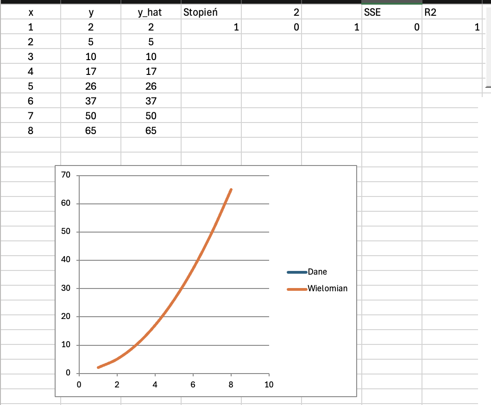
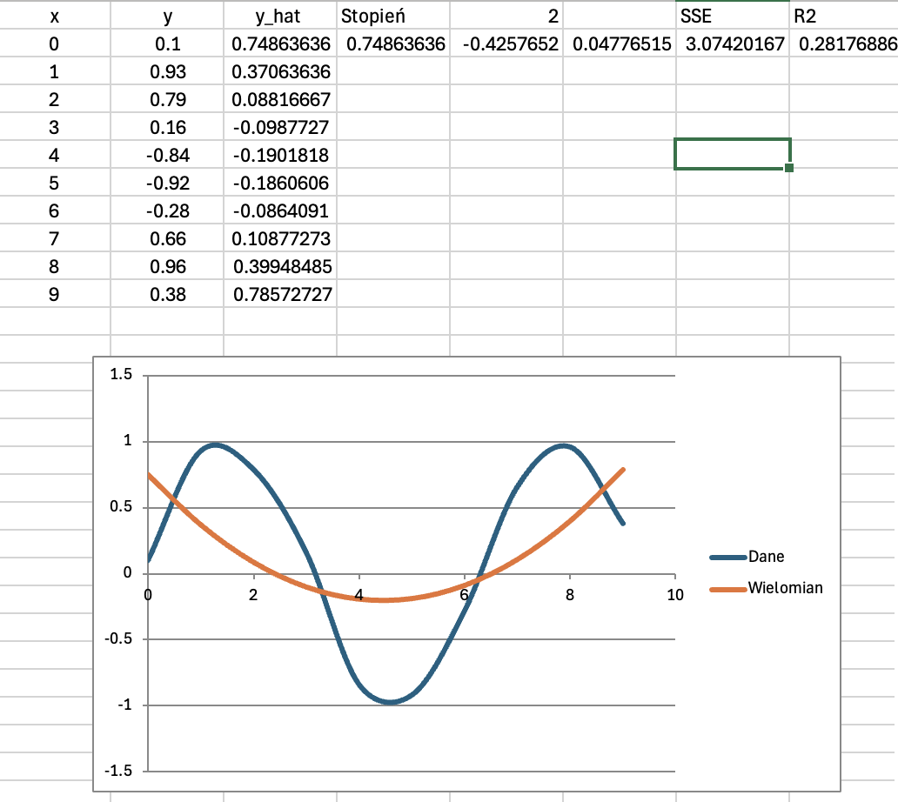
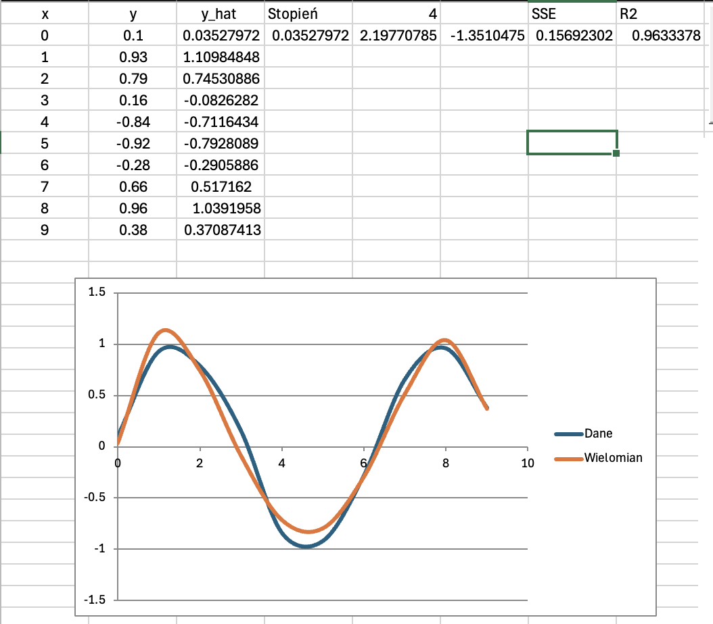

Autorzy:
Piotr Cywoniuk, Błażej Klepacki, Jan Kochaniak
Celem projektu jest zastosowanie metod rozwiązywania układów równań liniowych do zagadnienia regresji wielomianowej. Chcieliśmy pokazać, że wyznaczenie „optymalnego” wielomianu dopasowanego do danych można sprowadzić do rozwiązania układu równań liniowych i zrealizować to w praktyce w Excelu, korzystając z własnych funkcji w VBA.
Dany jest zbiór punktów pomiarowych $(x_i, y_i)$ dla $i = 1, \dots, n$.
Szukamy wielomianu stopnia $d$
$$ p(x) = a_0 + a_1 x + a_2 x^2 + \dots + a_d x^d, $$
który jak najlepiej przybliża dane.
Stosujemy klasyczne kryterium najmniejszych kwadratów:
$$ S(a_0, \dots, a_d) = \sum_{i=1}^n (y_i - p(x_i))^2. $$
Warunek minimalizacji prowadzi do układu równań liniowych:
$$ A \cdot a = b, $$
gdzie macierz $A$ zawiera sumy potęg $x_i$, a wektor $b$ sumy postaci $\sum x_i^k y_i$.
Rozwiązaniem jest wektor współczynników wielomianu: $a = (a_0, \dots, a_d)$.
Do rozwiązania układu $A \cdot a = b$ zastosowaliśmy eliminację Gaussa z częściowym wyborem elementu głównego (pivoting).
W każdym kroku:
Wybór elementu głównego poprawia stabilność obliczeń i zapobiega dzieleniu przez liczby bliskie zeru.
Oprócz współczynników wielomianu obliczyliśmy dwa podstawowe wskaźniki jakości dopasowania.
$$ \text{SSE} = \sum_{i=1}^n (y_i - \hat y_i)^2, $$
gdzie $\hat y_i = p(x_i)$.
Najpierw liczymy średnią:
$$ \bar y = \frac{1}{n} \sum_{i=1}^n y_i. $$
Zmienność całkowita:
$$ \text{SST} = \sum_{i=1}^n (y_i - \bar y)^2. $$
Zmienność niewyjaśniona:
$$ \text{SSE} = \sum_{i=1}^n (y_i - \hat y_i)^2. $$
Współczynnik determinacji:
$$ R^2 = 1 - \frac{\text{SSE}}{\text{SST}}. $$
Wartość $R^2$ bliska 1 oznacza dobre dopasowanie modelu.
Arkusz zawiera:
W projekcie zaimplementowaliśmy następujące funkcje:
GaussTab(A As Variant) As VariantRozwiązanie układu liniowego metodą Gaussa z częściowym wyborem elementu głównego.
SSE(yR, yHatR)Liczy sumę kwadratów błędów.
R2(yR, yHatR)Liczy współczynnik determinacji $R^2$.
WspolczynnikiWielomianu(xR, yR, stopien)Tworzy układ równań normalnych na podstawie danych, następnie wywołuje GaussTab.
PolyEval(x, coeffs)Oblicza wartość wielomianu w punkcie $x$.
RegresjaPrzycisk()Makro podpięte do przycisku.
Po kliknięciu:
Wszystkie obliczenia wykonywane są przez kod, zgodnie z wymaganiem projektu, aby nie używać formuł arkuszowych do generowania wykresów.
Pierwszy test wykonaliśmy na danych pochodzących dokładnie z funkcji kwadratowej postaci
$$ y = x^2 + 1, $$
czyli bez żadnych zakłóceń lub błędów pomiarowych. Zestaw obejmuje punkty od $x = 1$ do $x = 8$.
Po uruchomieniu programu dla stopnia $d = 2$ otrzymaliśmy współczynniki bardzo bliskie wartościom teoretycznym:
Otrzymane wartości $\hat y_i$ pokrywają się dokładnie z wartościami rzeczywistymi $y_i$, co powoduje:
Wykres pokazuje, że dane i wielomian na siebie nachodzą, a linia całkowicie zakrywa punkty danych. Taki wynik jest zgodny z oczekiwaniami, ponieważ model ma dokładnie ten sam stopień, co funkcja generująca dane. Ten przykład potwierdza poprawność zarówno implementacji równań normalnych, jak i metody Gaussa.

Aby sprawdzić działanie programu na bardziej złożonych danych, przetestowaliśmy go na zbiorze opartym o funkcję sinus z niewielkim szumem losowym:
$$ y \approx \sin(x) + \epsilon,\quad \epsilon \approx \pm 0.1. $$
Dane obejmują dziesięć punktów w zakresie $x = 0$ do $x = 9$. Wartości mają wyraźnie nieliniowy, falowy przebieg, przez co stanowią dobre wyzwanie dla regresji wielomianowej.
Dla wielomianu o stopniu $d = 2$ dopasowanie jest słabe: krzywa nie odwzorowuje lokalnych maksimów i minimów, a wartość $R^2$ jest niska:

Z kolei wielomiany stopnia $d = 3$ lub $d = 4$ znacznie lepiej podążają za kształtem sinusoidy, a współczynnik determinacji wzrasta:

Mimo tego nawet wielomian czwartego stopnia nie jest w stanie w pełni odtworzyć oscylacji funkcji trygonometrycznej. Przykład ten pokazuje ograniczenia regresji wielomianowej – zwiększanie stopnia poprawia dopasowanie, ale nie każdą nieliniową zależność da się dokładnie przybliżyć wielomianem niskiego stopnia.
W projekcie pokazaliśmy praktyczne połączenie:
Zrealizowany arkusz spełnia wszystkie wymagania: